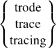
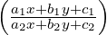

| Up | Next | Prev | PrevTail | Tail |
ODESOLVE is a solver for ordinary differential equations. It uses only elementary solution techniques. At present, it can handle only a single scalar equation presented as an algebraic expression or equation, and it can solve first-order equations of simple types, linear equations with constant coefficients, Euler equations, and some more complicated types. For example, the evaluation of
yields the result
Main authors: Malcolm MacCallum and Francis Wright.
Other contributor: Alan Barnes.
ODESOLVE [Mac88, Wri97, Wri99] was developed partly under the auspices of the
European CATHODE project [CAT]. Various test files that illustrate the capabilities of
ODESOLVE, including three versions (with names beginning with zim) based on a
published review of ODE (ordinary differential equation) solvers [PZ96], are included in
the source code distribution in the directory packages/odesolve, which you can
access online at
https://sourceforge.net/p/reduce-algebra/code/HEAD/tree/trunk/packages/odesolve/.
ODESOLVE implements most of the simple and well known solution techniques [Zwi92]. It also provides an extension interface (see §20.38.5), which could be used to support more sophisticated solvers, such as PSODE [Man94, MM97, PS83] and CRACK [BW92], to handle cases where simple techniques fail, although none of these extensions is implemented yet.
The main motivation behind ODESOLVE is pragmatic. It is intended to meet user expectations, to have an easy user-interface that normally does the right thing automatically, and to return solutions in the form that the user wants and expects.
The ODESOLVE package autoloads the first time the normal algebraic-mode odesolve operator is used.
The principal interface is via the operator odesolve. (It also has a synonym called dsolve to make porting of examples from Maple easier, but it does not accept general Maple syntax! And if solve is applied to a manifest ODE then it will call odesolve.)
For purposes of description let us refer to the dependent variable as “y” and the independent variable as “x”, but of course the names are arbitrary. The general input syntax is
All arguments except the first are optional. This is possible because, if necessary, ODESOLVE attempts to deduce the dependent and independent variables used and to make any necessary DEPEND declarations. Messages are output to indicate any assumptions or dependence declarations that are made. Here is an example of what is probably the shortest possible valid input:
Output of ODESOLVE messages is controlled by the standard REDUCE switch msg.
The first argument (ode) is required, and must be either an ODE or a variable (or expression) that evaluates to an ODE. Automatic dependence declaration works only when the ODE is input directly as an argument to the odesolve operator. Here, “ODE” means an equation or expression containing one or more derivatives of y with respect to x. Derivatives of y with respect to other variables are not allowed because ODESOLVE does not solve partial differential equations, and symbolic derivatives of variables other than y are treated as symbolic constants. An expression is implicitly equated to zero, as is usual in equation solvers.
The independent variable may be either an operator that explicitly depends on the independent variable, e.g. y(x) (as required in Maple), or a simple variable that is declared (by the user or automatically by ODESOLVE) to depend on the independent variable. If the independent variable is an operator then it may depend on parameters as well as the independent variable. Variables may be simple identifiers or, more generally, REDUCE “kernels”, e.g.
The order in which arguments are given must be preserved, but arguments may be omitted, except that if x is specified then y must also be specified, although an empty list {} can be used as a “place-holder” to represent “no specified argument”. Variables are distinguished from options by requiring that if a variable is specified then it must appear in the ODE, otherwise it is assumed to be an option.
Generally in REDUCE it is not recommended to use the identifier t as a variable, since it is reserved in Lisp. However, it is very common practice in applied mathematics to use it as a variable to represent time, and for that reason ODESOLVE provides special support to allow it as either the independent or a dependent variable. But, of course, its use may still cause trouble in other parts of REDUCE!
If specified, the “conditions” argument must take the form of an (unordered) list of (unordered lists of) equations with either y, x, or a derivative of y on the left. A single list of conditions need not be contained within an outer list. Combinations of conditions are allowed. Conditions within one (inner) list all relate to the same x value. For example:
Here is an example of boundary conditions:
Here is an example of initial conditions:
Here is an example of combined conditions:
Boundary conditions on the values of y at various values of x may also be specified by replacing the variables by equations with single values or matching lists of values on the right, of the form
y = y0, x = x0
or
y = {y0, y1, ...}, x = {x0, x2, ...}
For example
The final arguments may be one or more of the option identifiers listed in the table below, which take precedence over the default settings. All options can also be specified on the right of equations with the identifier “output” on the left, e.g. “output = basis”. This facility if provided mainly for compatibility with other systems such as Maple, although it also allows options to be distinguished from variables in case of ambiguity. Some options can be specified on the left of equations that assign special values to the option. Currently, only “trode” and its synonyms can be assigned the value 1 to give an increased level of tracing.
The following switches set default options – they are all off by default. Options set locally using option arguments override the defaults set by switches.
| Switch | Option | Effect on solution |
| odesolve_explicit | explicit | fully explicit |
| odesolve_expand | expand | expand roots of unity |
| odesolve_full | full | fully explicit and expanded |
| odesolve_implicit | implicit | implicit instead of parametric |
| algint | turn on algint | |
| odesolve_noint | noint | turn off selected integrations |
| odesolve_verbose | verbose | display ODE and conditions |
| odesolve_basis | basis | output basis solution for linear ODE |
| trode |  | turn on algorithm tracing |
| odesolve_fast | fast | turn off heuristics |
| odesolve_check | check | turn on solution checking |
An “explicit” solution is an equation with y isolated on the left whereas an “implicit” solution is an equation that determines y as one or more of its solutions. A “parametric” solution expresses both x and y in terms of some additional parameter. Some solution techniques naturally produce an explicit solution, but some produce either an implicit or a parametric solution. The “explicit” option causes ODESOLVE to attempt to convert solutions to explicit form, whereas the “implicit” option causes ODESOLVE to attempt to convert parametric solutions (only) to implicit form (by eliminating the parameter). These solution conversions may be slow or may fail in complicated cases.
ODESOLVE introduces two operators used in solutions: root_of_unity and plus_or_minus, the latter being a special case of the former, i.e. a second root of unity. These operators carry a tag that associates the same root of unity when it appears in more than one place in a solution (cf. the standard root_of operator). The “expand” option expands a single solution expressed in terms of these operators into a set of solutions that do not involve them. ODESOLVE also introduces two operators expand_roots_of_unity and expand_plus_or_minus, that are used internally to perform the expansion described above, and can be used explicitly.
The “algint” option turns on “algebraic integration” locally only within ODESOLVE. It also loads the algint package if necessary. Algint allows ODESOLVE to solve some ODEs for which the standard REDUCE integrator hangs (i.e. takes an extremely long time to return). If the resulting solution contains unevaluated integrals then the algint switch should be turned on outside ODESOLVE before the solution is re-evaluated, otherwise the standard integrator may well hang again! For some ODEs, the algint option leads to better solutions than the standard REDUCE integrator.
Alternatively, the “noint” option prevents REDUCE from attempting to evaluate the integrals that arise in some solution techniques. If ODESOLVE takes too long to return a result then you might try adding this option to see if it helps solve this particular ODE, as illustrated in the test files. This option is provided to speed up the computation of solutions that contain integrals that cannot be evaluated, because in some cases REDUCE can spend a long time trying to evaluate such integrals before returning them unevaluated. This only affects integrals evaluated within the odesolve operator. If a solution containing an unevaluated integral that was returned using the “noint” option is re-evaluated, it may again take REDUCE a very long time to fail to evaluate the integral, so considerable caution is recommended! (A global switch called “noint” is also installed when ODESOLVE is loaded, and can be turned on to prevent REDUCE from attempting to evaluate any integrals. But this effect may be very confusing, so this switch should be used only with extreme care. If you turn it on and then forget, you may wonder why REDUCE seems unable to evaluate even trivial integrals!)
The “verbose” option causes ODESOLVE to display the ODE, variables and conditions as it sees them internally, after pre-processing. This is intended for use in demonstrations and possibly for debugging, and not really for general users.
The “basis” option causes ODESOLVE to output the general solutions of linear ODEs in basis format (explained below). Special solutions (of ODEs with conditions) and solutions of nonlinear ODEs are not affected.
The “trode” (or “trace” or “tracing”) option turns on tracing of the algorithms used by ODESOLVE. It reports its classification of the ODE and any intermediate results that it computes, such as a chain of progressively simpler (in some sense) ODEs that finally leads to a solution. Tracing can produce a lot of output, e.g. see the test log file “zimmer.rlg”. The option “trode = 1” or the global assignment “!*trode := 1” causes ODESOLVE to report every test that it tries in its classification process, producing even more tracing output. This is probably most useful for debugging, but it may give the curious user further insight into the operation of ODESOLVE.
The “fast” option disables all non-deterministic solution techniques (including most of those for nonlinear ODEs of order > 1). It may be most useful if ODESOLVE is used as a subroutine, including calling it recursively in a hook. It makes ODESOLVE behave like the version distributed with REDUCE 3.7, and so does not affect the odesolve.tst file. The “fast” option causes ODESOLVE to return no solution fast in cases where, by default, if would return either a solution or no solution more slowly (perhaps much more slowly). Solution of sufficiently simple “deterministically-solvable” ODEs is unaffected.
The “check” option turns on checking of the solution. This checking is performed by code that is largely independent of the solver, so as to perform a genuinely independent check. It is not turned on by default so as to avoid the computational overhead, which is currently of the order of 30%. A check is made that each component solution satisfies the ODE and that a general solution contains at least enough arbitrary constants, or equivalently that a basis solution contains enough basis functions. Otherwise, warning messages are output. It is possible that ODESOLVE may fail to verify a solution because the automatic simplification fails, which indicates a failure in the checker rather than in the solver.
In some cases, in particular in symbolic solutions of Clairaut ODEs, the checker may need to differentiate a composition of operators using the chain rule. In order to do this, it turns on the differentiator switch expanddf locally only.
If ODESOLVE is successful it outputs a list of sub-solutions that together represent the solution of the input ODE. Each sub-solution is either an equation that defines a branch of the solution, explicitly or implicitly, or it is a list of equations that define a branch of the solution parametrically in the form {y = G(p),x = F(p),p}. Here p is the parameter, which is actually represented in terms of an operator called arbparam which has an integer argument to distinguish it from other unrelated parameters, as usual for arbitrary values in REDUCE.
A general solution will contain a number of arbitrary constants represented by an operator called arbconst with an integer argument to distinguish it from other unrelated arbitrary constants. A special solution resulting from applying conditions will contain fewer (usually no) arbitrary constants.
The general solution of a linear ODE in basis format is a list consisting of a list of basis functions for the solution space of the reduced ODE followed by a particular solution if the input ODE had a y-independent “driver” term, i.e. was not reduced (which is sometimes ambiguously called “homogeneous”). The particular solution is normally omitted if it is zero. The dependent variable y does not appear in a basis solution. The linear solver uses basis solutions internally.
Currently, there are cases where ODESOLVE cannot solve a linear ODE using its linear solution techniques, in which case it will try nonlinear techniques. These may generate a solution that is not (obviously) a linear combination of basis solutions. In this case, if a basis solution has been requested, ODESOLVE will report that it cannot separate the nonlinear combination, which it will return as the default linear combination solution.
If ODESOLVE fails to solve the ODE then it will return a list containing the input ODE (always in the form of a differential expression equated to 0). At present, ODESOLVE does not return partial solutions. If it fails to solve any part of the problem then it regards this as complete failure. (You can probably see if this has happened by turning on algorithm tracing.)
The ODESOLVE interface module pre-processes the problem and applies any conditions to the solution. The other modules deal with the actual solution.
ODESOLVE first classifies the input ODE according to whether it is linear or nonlinear and calls the appropriate solver. An ODE that consists of a product of linear factors is regarded as nonlinear. The second main classification is based on whether the input ODE is of first or higher degree.
Solution proceeds essentially by trying to reduce nonlinear ODEs to linear ones, and to reduce higher order ODEs to first order ODEs. Only simple linear ODEs and simple first-order nonlinear ODEs can be solved directly. This approach involves considerable recursion within ODESOLVE.
If all solution techniques fail then ODESOLVE attempts to factorize the derivative of the whole ODE, which sometimes leads to a solution.
ODESOLVE splits every linear ODE into a “reduced ODE” and a “driver” term. The driver is the component of the ODE that is independent of y, the reduced ODE is the component of the ODE that depends on y, and the sign convention is such that the ODE can be written in the form “reduced ODE = driver”. The reduced ODE is then split into a list of “ODE coefficients”.
The linear solver now determines the order of the ODE. If it is 1 then the ODE is immediately solved using an integrating factor (if necessary). For a higher order linear ODE, ODESOLVE considers a sequence of progressively more complicated solution techniques. For most purposes, the ODE is made “monic” by dividing through by the coefficient of the highest order derivative. This puts the ODE into a standard form and effectively deals with arbitrary overall algebraic factors that would otherwise confuse the solution process. (Hence, there is no need to perform explicit algebraic factorization on linear ODEs.) The only situation in which the original non-monic form of the ODE is considered is when checking for exactness, which may depend critically on otherwise irrelevant overall factors.
If the ODE has constant coefficients then it can (in principle) be solved using elementary “D-operator” techniques in terms of exponentials via an auxiliary equation. However, this works only if the polynomial auxiliary equation can be solved. Assuming that it can and there is a driver term, ODESOLVE tries to use a method based on inverse “D-operator” techniques that involves repeated integration of products of the solutions of the reduced ODE with the driver. Experience (by Malcolm MacCallum) suggests that this normally gives the most satisfactory form of solution if the integrals can be evaluated. If any integral fails to evaluate, the more general method of “variation of parameters”, based on the Wronskian of the solution set of the reduced ODE, is used instead. This involves only a single integral and so can never lead to nested unevaluated integrals.
If the ODE has non-constant coefficients then it may be of Euler (sometimes ambiguously called “homogeneous”) type, which can be trivially reduced to an ODE with constant coefficients. A shift in x is accommodated in this process. Next it is tested for exactness, which leads to a first integral that is an ODE of order one lower. After that it is tested for the explicit absence of y and low order derivatives, which allows trivial order reduction. Then the monic ODE is tested for exactness, and if that fails and the original ODE was non-monic then the original form is tested for exactness.
Finally, pattern matching is used to seek a solution involving special functions, such as Bessel functions. Currently, this is implemented only for second-order ODEs satisfied by Bessel and Airy-integral functions. It could easily be extended to other orders and other special functions. Shifts in x could also be accommodated in the pattern matching.
If all linear techniques fail then ODESOLVE currently calls the variable interchange routine (described below), which takes it into the nonlinear solver. Occasionally, this is successful in producing some, although not necessarily the best, solution of a linear ODE.
In order to handle trivial nonlinearity, ODESOLVE first factorizes the ODE algebraically, solves each factor that depends on y and then merges the resulting solutions. Other factors are ignored, but a warning is output unless they are purely numerical.
If all attempts at solution fail then ODESOLVE checks whether the original (unfactored) ODE was exact, because factorization could destroy exactness. Currently, ODESOLVE handles only first and second order nonlinear exact ODEs.
A version of the main solver applied to each algebraic factor branches depending on whether the ODE factor is linear or nonlinear, and the nonlinear solver branches depending on whether the order is 1 or higher and calls one of the solvers described in the next two sections. If that solver fails, ODESOLVE checks for exactness (of the factor). If that fails, it checks whether only a single order derivative is involved and tries to solve algebraically for that. If successful, this decomposes the ODE into components that are, in some sense, simpler and may be solvable. (However, in some cases these components are algebraically very complicated examples of simple types of ODE that the integrator cannot in practice handle, and it can take a very long time before returning an unevaluated integral.)
If all else fails, ODESOLVE interchanges the dependent and independent variables and calls the top-level solver recursively. It keeps a list of all ODEs that have entered the top-level solver in order to break infinite loops that could arise if the solution of the variable-interchanged ODE fails.
If the ODE is a first-degree polynomial in the derivative then ODESOLVE represents it in terms of the “gradient”, which is a function of x and y such that the ODE can be written as “dy∕dx = gradient”. It then checks in sequence for the following special types of ODE, each of which it can (in principle) solve:

, which is homogeneous after a linear transformation.If the ODE is not first-degree then it may be linear in either x or y. Solving by taking advantage of this leads to a parametric solution of the original ODE, in which the parameter corresponds to y′. It may then be possible to eliminate the parameter to give either an implicit or explicit solution.
An ODE is “solvable for y” if it can be put into the form y = f(x,y′). Differentiating with respect to x leads to a first-order ODE for y′(x), which may be easier to solve than the original ODE. The special case that y = xF(y′) + G(y′) is called a Lagrange (or d’Alembert) ODE. Differentiating with respect to x leads to a first-order linear ODE for x(y′). The even more special case that y = xy′ + G(y′), which may arise in the equivalent implicit form F(xy′− y) = G(y′), is called a Clairaut ODE. The general solution is given by replacing y′ by an arbitrary constant, and it may be possible to obtain a singular solution by differentiating and solving the resulting factors simultaneously with the original ODE.
An ODE is “solvable for x” if it can be put into the form x = f(y,y′). Differentiating with respect to y leads to a first-order ODE for y′(y), which may be easier to solve than the original ODE.
Currently, ODESOLVE recognises the above forms only if the ODE manifestly has the specified form and does not try very hard to actually solve for x or y, which perhaps it should!
The techniques used here are all special cases of Lie symmetry analysis, which is not yet applied in any general way.
Higher-order nonlinear ODEs are passed through a number of “simplifier” filters that are applied in succession, regardless of whether the previous filter simplifies the ODE or not. Currently, the first filter tests for the explicit absence of y and low order derivatives, which allows trivial order reduction. The second filter tests whether the ODE manifestly depends on x + k for some constant k, in which case it shifts x to remove k.
After that, ODESOLVE tests for each of the following special forms in sequence. The sequence used here is important, because the classification is not unique, so it is important to try the most useful classification first.
The recursive nature of ODESOLVE, especially the thread described in this section, can lead to complicated “arbitrary constant expressions”. Arbitrary constants must be included at the point where an ODE is solved by quadrature. Further processing of such a solution, as may happen when a recursive solution stack is unwound, can lead to arbitrary constant expressions that should be re-written as simple arbitrary constants. There is some simple code included to perform this arbitrary constant simplification, but it is rudimentary and not entirely successful.
The idea is that the ODESolve extension interface allows any user to add solution techniques without needing to edit and recompile the main source code, and (in principle) without needing to be intimately familiar with the internal operation of ODESOLVE.
The extension interface consists of a number of “hooks” at various critical places within ODESOLVE. These hooks are modelled in part on the hook mechanism used to extend and customize the Emacs editor, which is a large Lisp-based system with a structure similar to that of REDUCE. Each ODESOLVE hook is an identifier which can be defined to be a function (i.e. a procedure), or have assigned to it (in symbolic mode) a function name or a (symbolic mode) list of function names. The function should be written to accept the arguments specified for the particular hook, and it should return either a solution to the specified class of ODE in the specified form or nil.
If a hook returns a non-nil value then that value is used by ODESOLVE as the solution of the ODE at that stage of the solution process. (If the ODE being solved was generated internally by ODESOLVE or conditions are imposed then the solution will be re-processed before being finally returned by ODESOLVE.) If a hook returns nil then it is ignored and ODESOLVE proceeds as if the hook function had not been called at all. This is the same mechanism that it used internally by ODESOLVE to run sub-solvers. If a hook evaluates to a list of function names then they are applied in turn to the hook arguments until a non-nil value is returned and this is the value of the hook; otherwise the hook returns nil. The same code is used to run all hooks and it checks that an identifier is the name of a function before it tries to apply it; otherwise the identifier is ignored. However, the hook code does not perform any other checks, so errors within functions run by hooks will probably terminate ODESOLVE and errors in the return value will probably cause fatal errors later in ODESOLVE. Such errors are user errors rather than ODESOLVE errors!
Hooks are defined in pairs which are inserted before and after critical stages of the solver, which currently means the general ODE solver, the nonlinear ODE solver, and the solver for linear ODEs of order greater than one (on the grounds that solving first order linear ODEs is trivial and the standard ODESOLVE code should always suffice). The precise interface definition is as follows.
A reference to an “algebraic expression” implies that the REDUCE representation is a prefix or pseudo-prefix form. A reference to a “variable” means an identifier (and never a more general kernel). The “order” of an ODE is always an explicit positive integer. The return value of a hook function must always be either nil or an algebraic-mode list (which must be represented as a prefix form). Since the input and output of hook functions uses prefix forms (and never standard quotient forms), hook functions can equally well be written in either algebraic or symbolic mode, and in fact ODESOLVE uses a mixture internally. (An algebraic-mode procedure can return nil by returning nothing. The integer zero is not equivalent to nil in the context of ODESOLVE hooks.)
_____________________________________________________________________
_____________________________________________________________________
_____________________________________________________________________
_____________________________________________________________________
_____________________________________________________________________
The file extend.tst contains a very simple test and demonstration of the operation of the first three classes of hook. Beware that this extension interface is experimental and subject to change.
| Up | Next | Prev | PrevTail | Front |